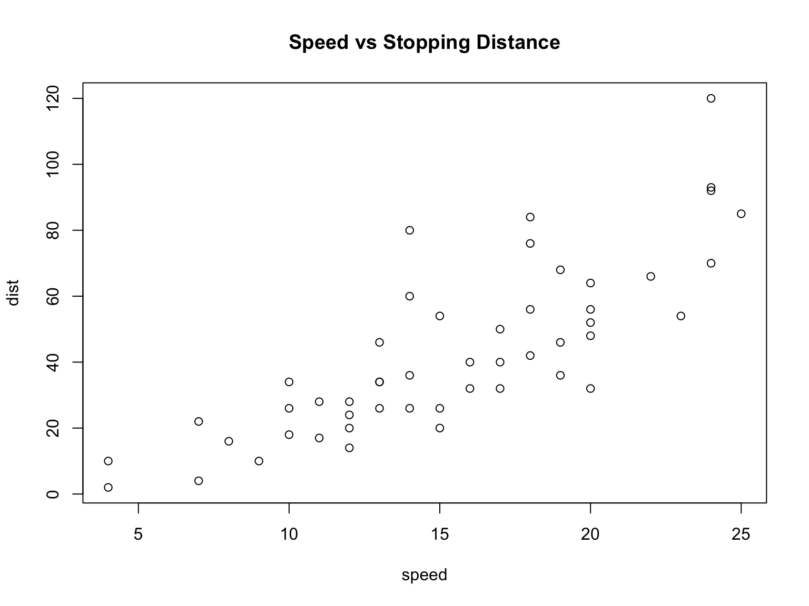
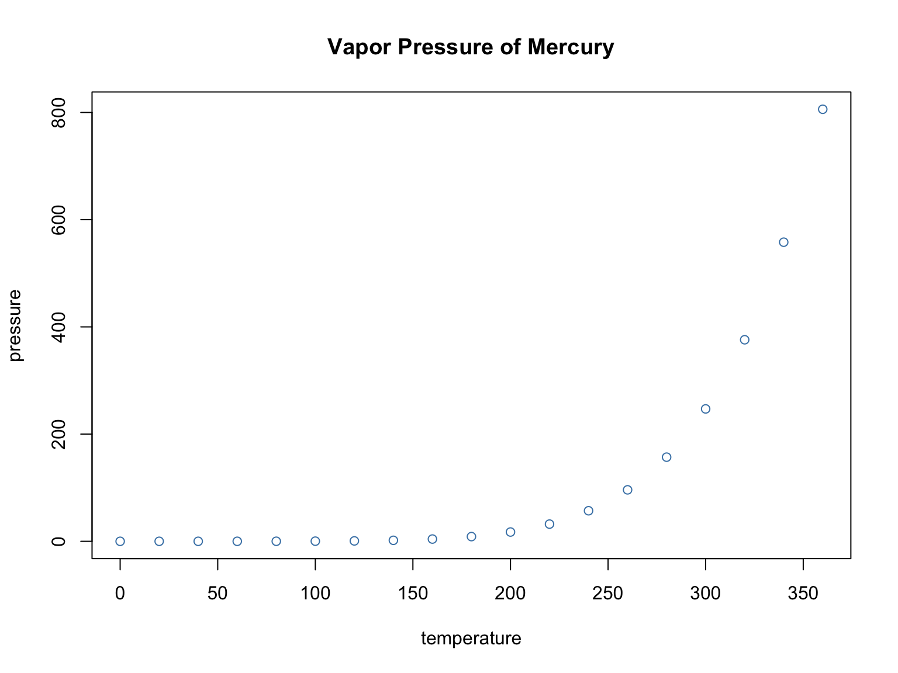

다음은 1부터 100까지의 합을 계산한 뒤, 버튼으로 결과를 보이기/숨기기 합니다.
[1] 5050
group x y 1 A 1 1 2 A 2 4 3 A 3 9 4 B 4 16 5 B 5 25 6 B 6 36
버튼 방식으로 플롯을 감싸 숨기기도 가능하지만, 가장 간단하고 안정적인 방법은 HTML의
<details>를 이용하는 것입니다. 슬라이드 안에서도 잘 작동합니다.

아래는 버튼 + div 래퍼로 플롯을 숨기는
예시입니다.
(플롯은 렌더링 시 이미 생성되며, 우리는 표시만 제어합니다.)

show_result(id, x)를 사용해서,
sum((1:1000)^2) 결과를
버튼 토글로 표시해보세요.details 토글을 이용해 임의의 ggplot을
보여주고 숨겨보세요.